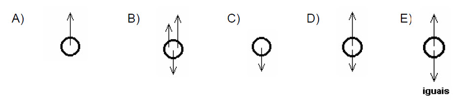
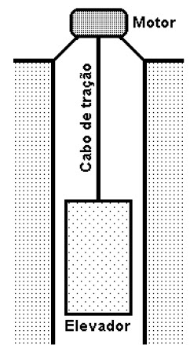
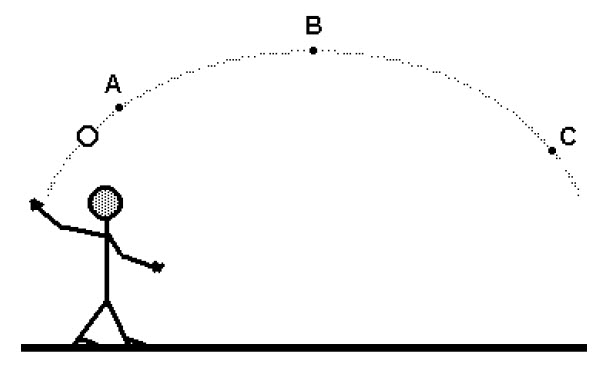
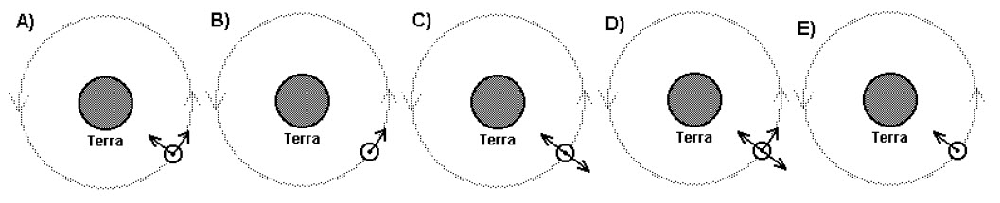

O teste sobre força e movimento investiga como você pensa o movimento. Por trás de cada questão existem duas maneiras de explicar as relações entre força e movimento: as visões aristotélica e newtoniana. Entender essas duas visões ajuda a ler o seu resultado e, principalmente, a perceber onde a intuição do dia a dia nos engana.
1. As duas visões, lado a lado
Concepção aristotélica
É a teoria sistematizada por Aristóteles no século IV a.C. e dominante por quase dois mil anos.
- Todo movimento exige uma força no sentido do movimento — um "motor" que empurra o corpo enquanto ele anda.
- A velocidade acompanha a força: mais força, mais velocidade; força constante, velocidade constante.
Fres = m·v Aristóteles nunca escreveu esta equação — é uma forma moderna de resumir sua ideia: a força seria proporcional à velocidade.
- Cessando a força que empurra, o movimento cessa.
- O repouso é o estado natural dos corpos na Terra.
Concepção newtoniana
É a teoria construída por Newton entre os séculos XVII e XVIII e que a Física usa até hoje.
- A força não mantém o movimento: ela o muda. Sem força resultante, o corpo mantém a velocidade que já tem (inércia).
- A força resultante causa aceleração, não velocidade: ela mede o quanto a velocidade varia.
Fres = m·a A 2ª lei de Newton: a força é proporcional à aceleração, não à velocidade.
- Força resultante nula significa velocidade constante — inclusive um corpo que segue em linha reta sem nada empurrando.
- Um corpo lançado só sofre a gravidade (e a resistência do ar); não existe "força do lançamento" viajando com ele.
2. A concepção aristotélica
Aristóteles distinguia dois tipos de movimento. O movimento natural era a tendência de cada corpo a buscar seu lugar próprio: a pedra cai porque seu lugar é embaixo, a chama sobe porque o dela é em cima. Já o movimento violento — empurrar, puxar, lançar — era todo movimento contrário a essa tendência, e exigia um motor em contato permanente com o corpo. Enquanto o motor age, há movimento; quando ele para, o movimento acaba.
Essa ideia descreve muito bem a vida cotidiana. O armário só desliza enquanto você o empurra. A bicicleta perde velocidade quando você deixa de pedalar. É uma leitura honesta da experiência — e é por isso que ela reaparece, espontaneamente, na cabeça de quase todo estudante.
O ponto fraco sempre foi o projétil. Se todo movimento violento precisa de um motor em contato, o que empurra a flecha depois que ela deixa o arco? No século XIV, Jean Buridan respondeu com a teoria do ímpeto: o lançamento transferiria ao corpo uma espécie de "impulso interno" que o manteria em movimento e se gastaria aos poucos, até acabar. É uma versão mais refinada da mesma ideia — e é exatamente a resposta que a maioria dos estudantes dá hoje sobre a bola chutada. No teste, ela aparece nas alternativas em que o corpo "continua se movendo por um tempo e depois para".
Havia, porém, um segundo mundo. Tudo isso valia apenas para a região sublunar — da Terra até a órbita da Lua —, feita dos quatro elementos (terra, água, ar e fogo), onde as coisas nascem, mudam e se corrompem. Acima da Lua começava o mundo supralunar: a Lua, o Sol, os planetas e as estrelas giravam em torno da Terra sem nunca parar, e sem precisar de motor algum. No livro Sobre o Céu, Aristóteles explicava que os corpos celestes eram feitos de um quinto elemento, o éter (a quintessência), incorruptível, cujo movimento natural era o circular e eterno, perfeito, sem início nem fim. No céu, portanto, o movimento perpétuo não era um problema a explicar: era a própria regra. Séculos depois, Ptolomeu transformaria esse cosmos geocêntrico num sistema matemático detalhado, que orientou a astronomia por mais de mil anos.
3. A concepção newtoniana
A virada começou com Galileu, que inverteu a pergunta. Em vez de perguntar o que mantém um corpo em movimento, perguntou o que o faz parar — e respondeu: o atrito. Num plano cada vez mais liso, uma esfera vai cada vez mais longe; num plano ideal, sem atrito, ela nunca pararia. O movimento não precisa de causa para continuar, apenas para mudar.
Newton transformou isso em lei. Pela 1ª lei (inércia), um corpo livre de força resultante mantém sua velocidade — parado se estava parado, em linha reta e velocidade constante se já se movia. Pela 2ª lei, a força resultante não fixa a velocidade, e sim a aceleração: ela mede o quanto a velocidade muda. Disso decorre a chave para ler o teste: velocidade constante ⇒ força resultante nula, e força resultante constante ⇒ velocidade que varia uniformemente. Um corpo lançado, já solto da mão, sofre apenas o peso.
A revolução, porém, foi maior do que reescrever as regras do movimento. Aristóteles precisava de duas físicas: uma para a Terra, onde tudo para, e outra para o céu, onde tudo gira para sempre. Newton mostrou que basta uma. A mesma força que faz uma maçã cair é a que mantém a Lua em órbita: a Lua está o tempo todo "caindo" em direção à Terra, apenas sem nunca chegar, porque também avança de lado. Com a gravitação universal e as mesmas três leis, a queda de uma pedra e a órbita dos planetas passaram a obedecer à mesma matemática. Céu e Terra, separados por dois mil anos de física, tornaram-se um só mundo — talvez a maior das rupturas trazidas pela nova mecânica.
4. As questões vistas pelas duas lentes
Veja como cada concepção responderia a alguns grupos de questões do teste. A divergência entre elas é justamente o que o teste mede.
A bola lançada para cima (questões 1 a 3)
Uma bola é lançada verticalmente. A é um ponto da subida, B o ponto mais alto e C um ponto da descida. Quais forças agem sobre ela em cada ponto?

Aristóteles / ímpeto: se a bola sobe, é porque há uma força para cima maior que o peso — o "impulso" do lançamento carregado dentro dela (uma seta para cima maior que a do peso, esquema D). No ponto mais alto, esse impulso já se igualou ao peso: as forças se equilibram, ou não há força nenhuma. Na descida, muitos ainda desenham duas setas para baixo — o peso e a "força da velocidade" que a bola teria adquirido.
Newton: assim que a bola deixa a mão, a única força é o peso, para baixo, igual na subida, no topo e na descida (esquema com uma só seta para baixo). Ela sobe porque já tem velocidade para cima, não porque haja uma força a empurrando. No topo a velocidade é zero por um instante, mas o peso continua agindo.
Na descida (questão 3), quem imagina só o peso acaba dando a mesma resposta que Newton — é o ponto em que as duas visões mais se aproximam.
A caixa empurrada e o elevador (questões 7 a 14)
Um indivíduo empurra uma caixa (com atrito); um motor levanta um elevador. Em vários momentos a força aplicada é um pouco maior que o atrito/peso, ou passa a igualá-lo.

Aristóteles: como a velocidade acompanha a força, uma força pouco maior que o atrito dá uma velocidade pequena e constante; diminuir a força faz a velocidade diminuir. E quando a força aplicada iguala o atrito ou o peso, não sobra motor: o corpo para — de imediato, na versão estrita, ou depois de um tempo, na versão do ímpeto.
Newton: o que importa é a força resultante. Se a força aplicada é maior que o atrito, a resultante não é nula: a caixa acelera, ganhando velocidade, por menor que seja a diferença. E quando a força aplicada iguala o atrito/peso, a resultante é zero: o corpo continua com velocidade constante, sem parar. É aqui que a intuição mais falha.
O lançamento oblíquo (questões 17 a 19)
Uma pedra é arremessada obliquamente e descreve uma parábola: A na subida, B no ponto mais alto, C na descida.

Aristóteles / ímpeto: há uma força na direção do movimento (a diagonal da subida, a horizontal no topo, a diagonal da descida) somada ao peso. É o impulso do arremesso "empurrando" a pedra ao longo da curva.
Newton: em todos os pontos, a única força é o peso, vertical para baixo. A pedra avança na horizontal por inércia; a gravidade apenas encurva sua trajetória. Não existe força na direção do movimento.
O satélite em órbita (questão 5)
Um satélite descreve um movimento circular uniforme em torno da Terra.

Aristóteles / ímpeto: algo precisa empurrar o satélite no sentido do movimento para mantê-lo girando (uma seta tangente à órbita) — com ou sem a gravidade somada, conforme a versão.
Newton: a única força é a gravidade, apontando para a Terra (centrípeta). Ela não mantém a velocidade — muda continuamente a direção do movimento, encurvando a trajetória numa circunferência. A velocidade se mantém sozinha, por inércia.
5. Resumo das previsões
| Situação | Aristóteles / ímpeto | Newton |
|---|---|---|
| Corpo lançado, já solto | Carrega uma força no sentido do movimento (o impulso do lançamento) | Só o peso age; a velocidade se mantém por inércia |
| Força aplicada > atrito, mas constante | Velocidade constante (proporcional à força) | Velocidade aumenta (há aceleração) |
| Força aplicada = atrito / peso | O corpo para (na hora, ou depois de um tempo) | Velocidade constante (resultante nula) |
| Corpo sobe / avança | Há uma força empurrando no sentido do movimento | Só há força se a velocidade estiver mudando |
Se, ao ler suas respostas no resultado, você reconhecer o padrão "há sempre uma força no sentido do movimento", saiba que está em ótima companhia: foi a resposta oficial da física por vinte séculos. Reconhecê-la é o primeiro passo para trocá-la pela de Newton.